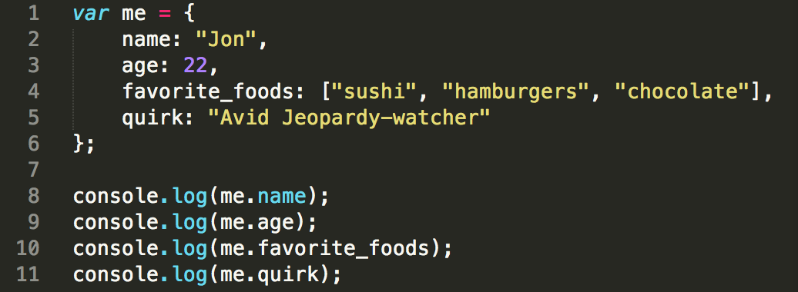
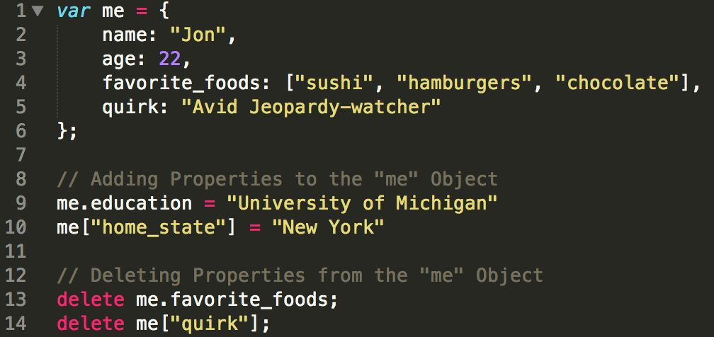

Jon O. Schwartz
Here are my thoughts on some of the amazing things I learned at Dev Bootcamp NYC
Here are my thoughts on some of the amazing things I learned at Dev Bootcamp NYC
Hello Readers! This week we put Ruby on hold and began learning JavaScript (JS), "the language of the web." JS, like Ruby, is an object-oriented language widely used among web developers. In this week's blog post, I will discuss the differences between JS Objects and Ruby Hashes.
JS contains two primary data structures, arrays and objects. JS arrays are roughly identical to Ruby arrays, so for the sake of time, I will only discuss JS objects vs. Ruby Hashes (for more info on Ruby's data structures click here).
Objects allow us to group values – including other objects – together and thus build more complex structures. Just like Hashes, Objects act as arbitrary collections of property-value pairs (similar to key-value pairs). Creating an Object is fairly simple and is accomplished by using curly brace notation, with the list of properties between the braces (each property ending in a colon) separated by commas (very similar to the syntax of Ruby Hashes.) Here's an example of a "me" Object that contains the properties "name," "age," "3 favorite foods," and "quirk."

Additionally, it is important to know how to access property values within an object. This can be done using the following syntax: object.property, which returns the value associated with that property. Using the example above, if you wanted to access "Jon," you would write "me.name". Furthermmore, as the user, we have the ability to add or remove an Object's properties as we please. In the example below, I've simultaneously added "education" and "home state" properties to the "me" object and deleted the "3 favorite foods" and "quirk" properties. (NOTE: I've used two separate notations for adding/deleting properties).

As a disclaimer, you should also know that like the "keys" in Ruby Hashes, the properties of JS Objects are "unique." This means that you can have only one property/value pair for any given property.
Hopefully this gave you a solid foundation for understanding the similarities and differences between JavaScript Objects and Ruby Hashes. Thanks for reading!